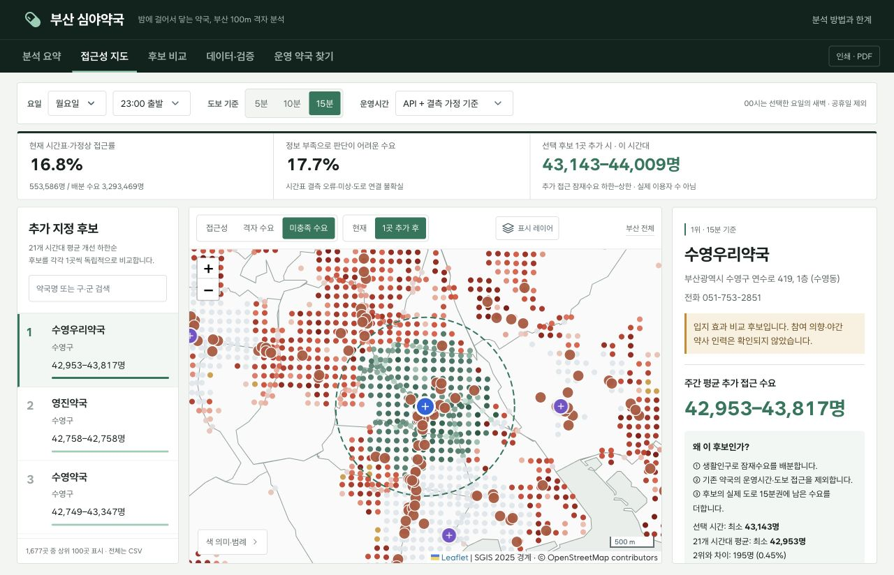
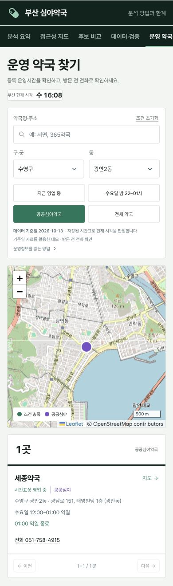
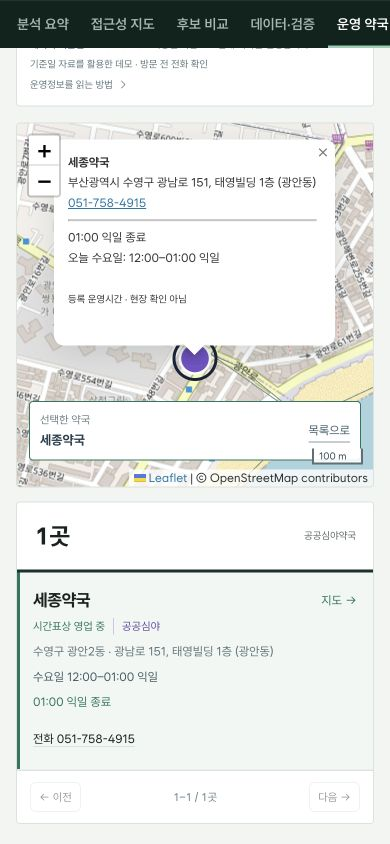

Case Study · Spatial Analysis
부산 심야약국
보행 접근성 지도
도착 시각에 열려 있는 약국까지 따져,
심야약국 추가 지정 후보를 찾았습니다.
거리만이 아니라, 도착했을 때 문이 열려 있는지까지.
- 본인
- 데이터 선정, 운영시간 대조·전처리 기준, 보행거리 기반 분석 기획
- AI 지원
- 분석 코드·재현 파이프라인·대시보드 구현 (결과는 독립 재집계로 검토)
- 운영시간 보완1,679곳
비어 있던 월요일 운영시간을
NMC 시간표로 보완 (약 99%) - 추가 지정 후보수영구 5곳
기본 조건의 상위 후보가
모두 수영구에 모였습니다 - 첫 화면 로딩88% 감소
대시보드 필수 파일
8.98MB → 1.10MB

01 밤에 열린 약국을 찾기 어렵다는 불편에서 시작했습니다.
부산 맘카페에서 밤중에 갈 약국을 찾기 어렵다는 글을 보고 두 가지를 물었습니다. 시민은 지금 어디로 갈 수 있을까? 공공심야약국을 한 곳 더 지정한다면 어디가 먼저일까?
02 월요일 결측의 약 99%를 NMC 시간표로 보완했습니다.
부산 API의 1,696곳 모두 월요일 시작 시각이 비어 있었습니다. 기관 ID·이름 또는 전화·200m 이내 위치로 같은 약국을 NMC와 연결했고, 근거가 부족한 14곳은 미상으로 남겼습니다.
| 처리 근거 | 약국 수 |
|---|---|
| NMC 등록 시간표 | 1,679곳 |
| 화~금 동일 시간에 따른 가정 | 3곳 |
| 근거 부족으로 미상 유지 | 14곳 |
03 가까워도, 도착 전에 닫으면 접근 가능으로 세지 않습니다.
도착 시각 = 출발 시각 + 도로망 보행시간. 그 순간에 영업 중인 약국이 있는지 격자마다 판정했습니다.
예시 01 · 자정에 폐점
월 23:50 화 00:05
15분 걸어 도착 · 00:00 폐점
거리 기준 안이어도 접근 제외04 기존에 닿던 수요를 빼고, 새로 닿는 수요를 계산했습니다.
후보 한 곳이 22–01시에 운영한다고 가정하면, 기존 약국으로 닿지 못하던 잠재수요 약 4.3만 명이 새로 접근 가능해집니다. (수영우리약국 · 월요일 23시 · 도보 15분)
초록: 새로 접근 가능 · 파랑: 미상에서 가정상 접근으로 바뀐 격자 · 점선 원: 직선 참고 범위
05 1위를 단정하지 않고, 가정을 바꿔봤습니다.
1·2위 차이는 0.45%뿐이고, 보행속도만 바꿔도 기본 1위가 1–32위로 달라졌습니다. 그래서 단일 1위 대신 수영구 상위 후보군을 제시했습니다.
| 조건 | 수영우리약국 순위 | 해당 조건의 1위 |
|---|---|---|
| 기준 · 4km/h | 1위 | 수영우리약국 |
| 보행속도 3km/h | 17위 | 연제봄약국 |
| 보행속도 5km/h | 32위 | 화목2층약국 |
| 일요일 일반약국 휴무 가정 → 미상 | 23위 | 삼보약국 |
| 거주인구 비중 → 격자 면적 비중 | 2위 | 큰소망약국 |
06 데이터가 맞아 보여도, 실제 동작을 다시 확인했습니다.
두 API 좌표가 같아도 주소 구가 달랐습니다.
- 문제
- 두 원천이 같은 잘못된 좌표를 공유해 일부 약국이 다른 구에 표시됐습니다.
- 해결
- 도로명주소 건물점으로 8곳을 보정해 구 불일치 0건, 15분 하한 18.7% → 18.2%.
동명 약국은 유지하고, 팝업 선택 기준을 바꿨습니다.
- 문제
- 같은 좌표를 공유한 동명 약국이 다른 시설의 팝업을 열 수 있었습니다.
- 해결
- 좌표 대신 시설 ID로 연결하고 두 약국의 팝업을 각각 검사했습니다.
갱신 실패가 기존 분석 결과를 덮어쓰지 않게 했습니다.
- 문제
- 수집·검증이 실패하면 불완전한 결과가 게시될 위험이 있었습니다.
- 해결
- 격리 폴더에서 검사한 뒤 교체하고, 실패하면 기존 결과를 보존합니다.
분석에서, 시민이 약국을 찾는 화면까지.
1,716곳을 지역·영업 중·심야 운영·공공심야약국으로 걸러, 선택한 약국을 지도에서 바로 확인합니다.

수영구 → 광안2동 → 공공심야약국
화면 일부 · 선택하면 전체 원본

지도 이동 · 선택 표시 · 운영정보 확인
데이터 처리 상세
부산 약국·NMC API, 공공심야약국 명단, 부산 빅데이터웨이브의 2026-07 생활인구, SGIS 100m 인구격자·행정동 경계, 2026-10-12 OSM 보행망과 도로명주소를 결합했습니다.
매칭 규칙: 미상·추정 시간표는 NMC의 완전한 시간 쌍으로 교체하고, 부산 API와 충돌하면 NMC를 우선했습니다. 초기에 검토한 심평원 분기 자료만으로 보완한 값은 최종 모형에서 제외했습니다. 아래는 심평원 값을 NMC로 교체한 두 사례입니다.
| 약국 | 부산 원본 | 초기 심평원 보완 | NMC로 교체 |
|---|---|---|---|
| 미소약국사상구 사상로 325 | 시작 공란 | 08:00–19:00 | 08:30–19:00 |
| 우리약국해운대구 중동1로 26 | 시작 공란 | 08:30–19:00 | 09:00–19:00 |
남은 결측: 월요일이 미상이고 화~금 시간이 모두 같으면 월요일을 보완했습니다. 일반약국은 토·일 또는 일요일만 두 원천 모두 공란이면 휴무를 가정했고, 그 밖의 근거 부족은 미상으로 남겼습니다. 휴게시간 81곳과 월별 요일 예외 9곳은 별도 처리했습니다.
도착 판정: 자정을 넘는 구간은 전날 시작한 영업까지 함께 검사하고, 종료 정각 도착은 제외합니다.
예시 02 · 전날 영업이 이어짐
화 00:40 화 00:50
10분 걸어 도착 · 월 22:00–화 01:00 영업
월요일 구간으로 접근 포함위치: 동명 약국은 각각 유지하고, 건물점과 250m 이상 차이가 남은 21곳은 위치 확인 필요로 표시했습니다.
계산 검증과 초기 로딩 개선
21,963개 격자·동 조각과 1,696곳의 보행거리를 계산했습니다. 후보 1,677곳 × 운영 기준 2 × 도보 기준 3의 10,062개 점수를 독립 재집계해 일치 여부를 검사했습니다. 출발점 20개의 정방향 경로와 거리행렬 최대 차이는 약 0.00006m였습니다.
탭별 지연 로딩과 gzip·캐시·재시도를 적용해 첫 화면 필수 파일 합계를 8.98MB → 1.10MB, 약 88% 줄였습니다. 압축 전 파일 합계이며 실제 로딩 시간 개선율은 아닙니다. 웹본과 데이터·코드·글꼴을 내장한 다운로드용 독립 HTML을 구분했습니다.
2026-10-13 당시 전체 최신 파이프라인 19단계의 시간 합계는 약 227초입니다. 현재 코드는 스냅샷 23단계·최신 24단계로, 이 전체 구성의 시간을 새로 측정한 것은 아닙니다. 10-14에는 기존 코드를 수정 없이 새 API 수집부터 월요일 보완·최종 시간표 생성까지 별도로 격리 실행했습니다.
최신 갱신은 격리 폴더에서 검사를 통과한 후 결과를 교체하며 실패하면 기존 결과를 보존합니다. 과거 SGIS 임시 링크가 만료돼도 동일 해시의 원본을 재사용하도록 입력 기준과 SHA-256을 남겼습니다.
해석 범위와 프로젝트 정보
- 잠재수요: 생활인구를 거주인구 분포로 배분했습니다. 실제 약국 이용자나 의약품 수요가 아닙니다.
- 보행 가정: 기본 속도는 4km/h이며 경사·계단 감속·야간 안전은 반영하지 않았습니다.
- 운영시간: 등록 시간표·보완 가정을 사용합니다. 공휴일·임시휴무·현장 영업을 검증한 자료가 아닙니다. 기준일 이후 변경은 자동 반영되지 않습니다.
- 후보: 참여 의향·야간 인력·지정 자격을 확인한 결과가 아닙니다. 순위는 가정에 따른 검토 순서입니다.
- 분석 방법: 실제 방문자 레이블이 없어 예측·분류 모델은 사용하지 않았습니다. 보행 네트워크를 이용한 시나리오 분석입니다.
- 수치 범위: 약 99%는 월요일 시간표를 보완한 비율이며 현장 검증 비율이 아닙니다. 하한–상한은 가정에 따른 모형 범위이며 통계적 신뢰구간이 아닙니다. 지도 화면의 추가 접근 43,143–44,009명은 월요일 23시 한 조건이고, 순위에는 21개 조건 평균 42,953–43,817명을 씁니다. 실제 방문자 수가 아닙니다.
- 화면: 대시보드는 2026.10.13 등록 시간표 기준 데모이며, ‘영업 중’ 표시는 현장 영업 확인이 아닙니다. 건물점 보정은 출입구·현장 검증이 아닙니다.
2026 BIG DATA 활용대회에 개인으로 지원했고(접수 마감 9월 18일) 본선에는 진출하지 못했으며, 이후 재현성·데이터 품질·시민용 화면을 보완했습니다. 맘카페 사례는 문제 발견의 계기이며 정량 조사가 아닙니다. DB 없이 Cloud Run에 배포한 기준일 데모이고 자동 갱신·CI/CD는 사용하지 않습니다.